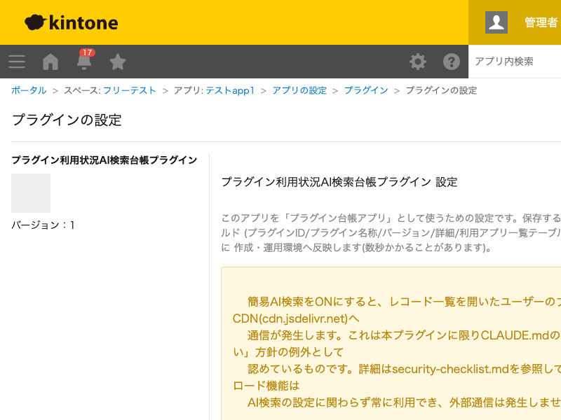

GovAppsプラグイン 安全性を確認できる無料kintoneプラグイン集
kintone環境にインストール済みのプラグインと、それを利用しているアプリの一覧を専用の「台帳アプリ」に 自動収集し、簡易AI検索やAI用データダウンロードで「目的に合ったプラグインを探す」ことができるように するプラグインです。社内にどんなプラグインが増えてきたか把握しづらくなってきた組織向けです。
「台帳アプリ」の一覧画面に置かれた「プラグイン利用状況を同期」ボタンを押すと、kintone環境全体のインストール済みプラグイン一覧と、各プラグインを実際に追加しているアプリの一覧をREST APIで取得し、プラグイン単位のレコード(利用アプリはサブテーブル)として自動的にUPSERTします。運用が長くなるほど把握しづらくなる「野良プラグイン」の棚卸しに使えます。
設定で簡易AI検索を有効にすると、台帳アプリの一覧画面にAI検索ボタンが表示され、「日付を和暦にしたい」のような自然文で台帳内のプラグインをベクトル検索できます(ブラウザ内で完結する軽量モデルによる検索)。新しく業務要件が出たとき、似た機能のプラグインが社内に既にないかをまず探せます。
簡易AI検索をオフにしている場合でも、「AI用データをダウンロード」ボタンで台帳の全レコードをJSON形式の.txtファイルとして常時ダウンロードできます。社内で使っているNotebookLMやChatGPTなどにそのままアップロードして、対話形式でプラグインを探す用途に使えます(この操作自体は外部通信を伴いません)。
同期ボタンの表示・非表示はあくまで画面上の絞り込みです。実際にプラグイン利用アプリの一覧を取得できるのはcybozu.com共通管理者のみのため、権限を持たないユーザーが実行すると失敗します。
kintoneセキュアコーディングガイドラインに沿って実装時にチェックしています。特に重要な点は次のとおりです。
pcb_apps_table等)を使用し、2回目以降の設定保存で既存フィールドを再作成しようとしてエラーになることがないよう冪等に実装しています。kintone.api()(kintone自身への呼び出し専用の内部ラッパー)経由で行い、生のfetch/XMLHttpRequestでURLを直接組み立てていません。APIトークンやパスワード等の認証情報はコード・設定に一切含めていません。innerHTMLではなくtextContentやdocument.createElement()のみで組み立てており、DOMへ構造として解釈されません。詳細な確認項目・確認日は下記GitHubのチェックリストに全項目を掲載しています。

設定保存時に、台帳アプリのフィールド構成確認・必要に応じたフィールド追加・デプロイ(数回)を実行します。 「プラグイン利用状況を同期」ボタンを押すたびに、プラグイン一覧取得(1回以上)・プラグインごとの 利用アプリ取得(プラグイン数と同じ回数)・利用アプリ情報取得(100件区切り)・台帳アプリへの書き込み (100件区切り)を実行します。実行前に概算のAPI実行回数を確認ダイアログで表示します。 簡易AI検索を有効にした場合、検索ダイアログを開くたびに台帳アプリの全レコードを取得します (kintoneへの通信のみで、外部への通信ではありません)。